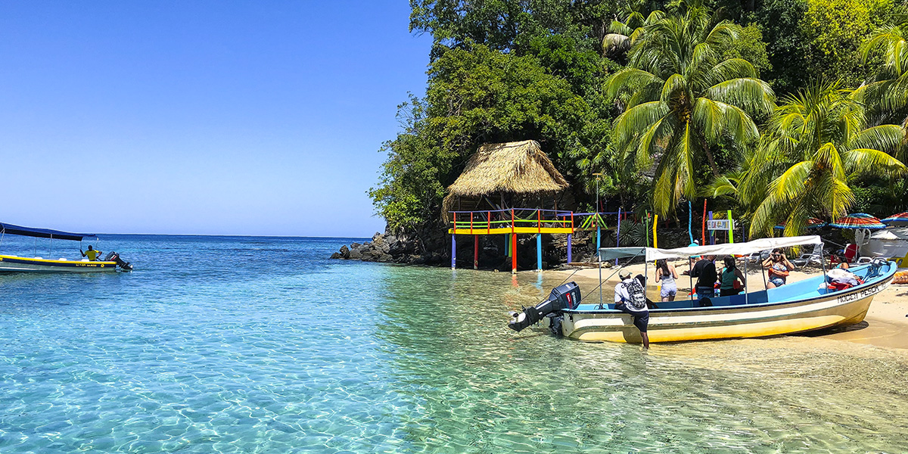
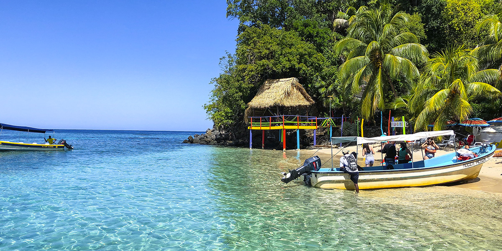

Honduras es un país de América Central con costas en el mar Caribe al norte y en el océano Pacífico al sur. En el bosque tropical cerca de Guatemala, el antiguo sitio ceremonial maya de Copán tiene jeroglíficos tallados en piedra y estelas, altos monumentos de piedra. En el mar Caribe, se encuentran las Islas de la Bahía, un destino para el buceo que forma parte de la Barrera de Coral Mesoamericana
ÚTILA
Honduras se encuentra localizada en una posición tropical de 15 a 16 grados al norte del ecuador. Únicamente cuenta con dos estaciones, las cuales están bien definidas: La estación seca y la estación lluviosa. La estación lluviosa comienza en mayo extendiéndose hasta el mes de julio con una pausa durante el mes de agosto; esta generalmente se reanuda en septiembre hasta el mes de noviembre cuando comienza la estación seca. Esta estación, se extiende hasta el mes de abril o mayo. La zona sur de Honduras cuenta con un clima de sabana tropical. En esta zona, se presenta generalmente un clima seco por seis meses o más.
ROATÁN
Roatán es una de las Islas de la Bahía de Honduras en el Caribe. Forma parte del enorme Sistema Arrecifal Mesoamericano y es conocida por las playas, los sitios de buceo y la fauna marina, incluido el tiburón ballena. En el suroeste está la concurrida playa de West Bay, con un arrecife de coral cerca de la costa. Los cruceros atracan en la capital de Coxen Hole y en la cercana Mahogany Bay. Al este, hay asentamientos más pequeños, incluida la aldea garífuna de Punta Gorda.
 

TRUJILLO
Trujillo es un lugar rico en historia de piratas, conquistas, corsarios, compañías bananeras, con un pasado precolombino que hace de este destino un atractivo único. Su casco histórico está compuesto por los preciosos edificios de la Catedral San Juan Bautista, la Fortaleza de Santa Bárbara, el antiguo cementerio, y otros importantes edificios. No podemos dejar por fuera su deliciosa gastronomía, donde se puede degustar tabletas y pan de coco, kazabe, y la tradicional bebida garífuna, gifitti
Honduras es una tierra de riquezas donde la hospitalidad de su gente es la protagonista, y te harán sentir bienvenido como un huésped respetable. En comparación con el resto de América Central, en Honduras se encuentra mucha más gente dispuesta a hablar inglés, un legado debido a la antigua presencia del cultivo del banano e industrias retiradas en el siglo XX. Honduras es el destino perfecto para disfrutar de las mejores playas. Este lugar ofrece lo mejor de ambos mundos: el encanto de América Central y la exótica belleza del Caribe.